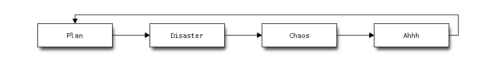

chart in blog post
Same as sphinx, you can make use of blockdiag as extension in tinkerer. That is, you can draw chart in your blog by blockdiag.`
Here is a quick setup procedure.
First install sphinxcontrib-blockdiag package.
$ sudo pip install sphinxcontrib-blockdiag
Then add ‘sphinxcontrib.blockdiag’ in the list of extensions in conf.py.
extensions = ['tinkerer.ext.blog', 'tinkerer.ext.disqus', 'sphinxcontrib.blockdiag']
You can specify font of your choice used in blockdiag. Search for path of your font.
$ fc-list
And specify font paht as value of blockdiag_fontpath.
blockdiag_fontpath = '/usr/share/fonts/truetype/ttf-dejavu/DejaVuSansMono.ttf'
Now it’s ready for usage.
For example,
